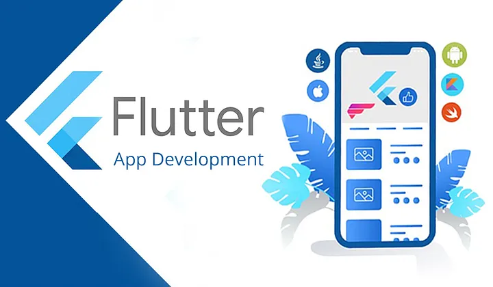

What I Learned Building a Real-World Mobile App with Flutter
I actually met Flutter a bit before my internship, but that exposure was quite limited. The internship was my first chance to use Flutter in a real project — I worked on the frontend, building different screens and shared components while adapting to the existing project structure.